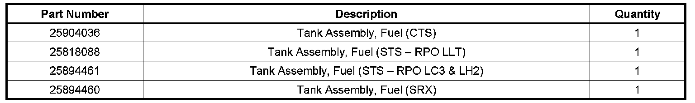
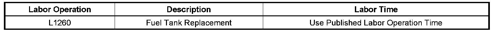

Fuel System - Slow Tank Fill/Nozzle Shuts Off
TECHNICALBulletin No.: 08-06-04-017
Date: March 10, 2008
Subject:
Slow Fuel Fill, Premature Fuel Fill Nozzle Shut Off, Fuel Tank Difficult to Fill Full (Replace Fuel Tank)
Models:
2008 Cadillac CTS, SRX, STS, STS-V
Affected VINs
Condition
Some customers may comment that the fuel tank is difficult or slow to fill or that the fuel fill nozzle shuts off before the tank is full.
Cause
This condition may be caused by premature fuel fill nozzle shut-off. Dimensional discrepancies were found in some of the Fill Limiting Vent Valves (FLVV) that are molded in and are part of the fuel tank assembly.
Correction
Important:
DO NOT replace the filler neck, the fuel/vapor lines or other fuel components.
Replace the fuel tank assembly. Refer to Fuel Tank Replacement in SI.

Parts Information
Warranty Information

For vehicles repaired under warranty, use the table.

Disclaimer